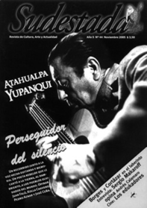

Buscar
La novela de la vida
Hubo en Buenos Aires una narradora que con su propia vida construyó su obra. Desconocida para el gran público, Nira Etchenique se destacó en un género que perturba a más de un escritor: cuando la historia es uno mismo.
Edición N° 44
Noviembre 2005
Revista bimensual
Comprar edición impresaSumario
- Atahualpa Yupanqui: Un grito en el silencio
- Saquen una hoja
- Las aventuras del Capitán Makaroff
- La buena edukación/ fin de semana revolucionario
- De cartones y literatura
- La novela de la vida
Compartir Articulo
En la ciudad de Buenos Aires hubo una llamada Generación del '60: poetas, escritores, letristas del tango y músicos que, recién hoy -cuarenta y cinco años después- es reinvidicada porque impuso en la cultura un tinte costumbrista, hasta ese momento patrimonio de los tangueros. En muchos casos se quiere limitar la influencia de esta Generación al ámbito político por su compromiso en aquellos días turbulentos con más autoritarismo que democracia. Tiempos de una efervescente situación internacional que movilizaba a la juventud. El propio Juan Gelman señala que reducirla a la poesía política es un "malentendido", porque sus integrantes tenían "un desenfado que ayudó a que los poetas se liberaran de determinados moldes". Como dice Carlos Patiño, una Generación que "escribía ‘como sentía' de los temas que ‘sentía', de la forma que ‘sentía' y esto la galvaniza y legitima". La lista de nombres incluye a Alejandra Pizarnik, el propio Gelman, Roberto Santoro, Olga Orozco, César Fernández Moreno y Lubrano Zas, entre otros, junto al movimiento de la Nueva Canción con Armando Tejada Gómez y Hamlet Lima Quintana. Todos bebían de las mismas fuentes: Nicolás Olivari, Macedonio Fernández, Mario Jorge de Lellis, Raúl González Tuñón, Luis Luchi, Humberto Costantini y los poetas del tango Evaristo Carriego, Cátulo Castillo, Julián Centeya, Homero Manzi y Nicolás Olivari. Eran los días del Instituto Di Tella y de las revistas literarias El grillo de papel, El escarabajo de oro y Hoy en la cultura. En ese contexto, una mujer es considerada una de las mejores voces de aquella Generación: Nira Etchenique, valorada por sus colegas, aunque careció del reconocimiento popular. Escritora de ensayos, cuentos y novelas, también compuso letras de tango y ejerció el periodismo en diversas redacciones, como Aquí nosotras y La semana. Más tarde, forzada por la situación política, se refugió en los trabajos de corrección para editoriales.
Su nombre real fue Cilzanira Edith Etchenique y nació en el barrio de Flores un 26 de marzo de 1926. Tuvo cuatro hijos: Pablo, Claudio y Gabriela, junto a Montague Adelfang; luego a Sandra con Mario Jorge de Lellis. Falleció en el atardecer del sábado 6 de agosto de este año en su departamento del barrio de Congreso. Un artículo del historiador Roberto Selles, unas líneas en Clarín y un despacho de agencia dieron cuenta de su muerte víctima de cáncer. Poco antes recibió un homenaje por parte de la Secretaría de Educación del Gobierno porteño, que publicó una breve antología para distribuir entre estudiantes secundarios. Queda aún una novela inédita que su amiga, Lucía Laragione, está empeñada en publicar.
La Vasca Etchenique dejó una obra que si bien no es numerosa, alcanzó para que escritores como Andrés Rivera, Ricardo Piglia, Ana María Shua y Griselda Gambaro la consideraran una de las mejores escritoras contemporáneas, en especial por la ductilidad con que trabajó el género autobiográfico. Desde 1952, cuando publicó el libro de poemas Mi canto caído, su producción literaria incluye casi mil cuentos en revistas femeninas como Vosotras, algunos de los cuales firmó con seudónimo para eludir la censura de los militares que la condenaban por su compromiso político y sindical. La lista continúa con Esta tierra puesta en soledad; Horario corrido y sábado inglés, Faja de honor de la SADE; los ensayos Alfonsina Storni y Roberto Arlt; Diez y punto; Sur; Último oficio; Tempestad es la palabra; las novelas Persona, premio Fundación Dupuytren, y Judith querida; Vox Populi, el cuento que da título al libro ganó el premio Ciudad de Barañain, Navarra, España, y la señalada Antología de mayo de 2005 para estudiantes porteños.
En los años sesenta Nira frecuentaba los ámbitos culturales y la calle Corrientes era el lugar donde la bohemia porteña gestaba una explosión añorada aún hoy por algunos de sus protagonistas, pero desconocida para los jóvenes del siglo XXI que transitan esas mismas veredas y frecuentan los mismos bares. "Luchábamos y disfrutábamos de la vida. Éramos capaces de pelearnos por un poema, por una idea y amigarnos con un vaso de vino en una cantina", recordaba. La ruptura de su pareja con Mario Jorge de Lellis inspiró Diez y Punto, una serie de poemas sobre "una historia de amor que, al mismo tiempo, es una despedida que sólo pudo haber sucedido en aquel Buenos Aires. Fueron escritos para alguien a quien amaba", recordó en abril de este año durante un homenaje en La Manzana de las Luces. "Pregunto por la muerte y me pregunto/ por dónde te quitaron de mi sangre,/ quién fue, quién quiso, quién estuvo,/ comiéndote el amor con dientes grandes./ Ahora ya me callo, es el crepúsculo./ El sol se agarra a dios como a un ahogado", escribió en el final de una relación con un De Lellis gravemente enfermo, quien murió un año después, el 14 de noviembre de 1966. En esas poesías y más allá de los personajes nunca mencionados pero reconocidos por todos, tenemos una pintura de la época, de sus valores y la presencia del tango como melancolía, el bar, el dolor y la rebelión que brota en cada verso: "No concedo perdón, quiero venganza./ Este libro es verdugo de mí misma./ Diez poemas de amor y de castigo/ y un suicido común que aquí nos mata".
Con los textos de Diez y punto grabó un disco musicalizado con el bandoneón de Rodolfo Mederos y producción de Manuel Matus. También participó de dos espectáculos donde mezclaba literatura y música: Como con bronca y junando, en 1968, con la participación de Nelly Prince, Mabel Manzotti y Carlos Barral y, en 1971, Tiempo de tango y tempestad, con la dirección de Marcela Sola. Amiga de Cátulo Castillo y Julián Centeya escribió los tangos De charco y jazmín, junto a Héctor Stamponi; Réquiem para Discépolo; De mi barrio, Flores; Chau viejo y Fue la ciudad, todos con Sebastián Britos, y Nelly de barrio, con Roberto Selles y Alfredo Lescano. Selles, historiador y miembro de la Academia del Tango, opina que "la poesía de Nira era de avanzada para el gusto popular, como sucedió con Horacio Ferrer y Juan Carlos La Madrid. Ahora, a la distancia, se puede entender mucho más". Sus letras fueron cantadas por Rosita Quintana, Fernanda Rusek, Alberto Vega y Daniel Loustau, entre otros.
La impronta autobiográfica que Nira Etchenique incorporó a su obra fue esencial. Ricardo Piglia la consideró "una escritora secreta y sutil". Ante la aparición de Judith querida (Corregidor), señaló que "ha escrito otra novela admirable en la que vuelve a imaginar y a recordar su experiencia y su vida", un libro que "está destinado a convertirse en un clásico -a la vez irónico y sentimental- de nuestra riquísima tradición autobiográfica". Para Andrés Rivera se trata de una obra "de excepción. Conforta al lector y lo envuelve en una ternura como pocas veces encontré en la literatura"...
La nota completa en la edición gráfica de Sudestada Nº44
Comentarios
Marcelo Massarino
Un copado
Articulos más vistos


LIBRERÍA SUDESTADA

Colección infantil

Distribuidora de Libros

Suscripción

Sudestada en URUGUAY

Otros articulos de esta edición
Atahualpa Yupanqui: Un grito en el silencio
De Atahualpa, el mayor trashumante que pisó estas tierras, se desconocen no sólo el misterio que encierra su obra, sino ...
Las aventuras del Capitán Makaroff
Desconocido por gran parte del público porteño, el argentino Sergio Makaroff es autor de canciones que otros artistas como Andrés ...
De cartones y literatura
Con dos años en la calle, la editorial Eloísa Cartonera no es una curiosidad extravagante en el mundo de la ...
La buena edukación/ fin de semana revolucionario
Los edukadores cuestiona el devenir de los jóvenes revolucionarios del 68 y propone un accionar «anti-sistema» desde la ya trabajada ...